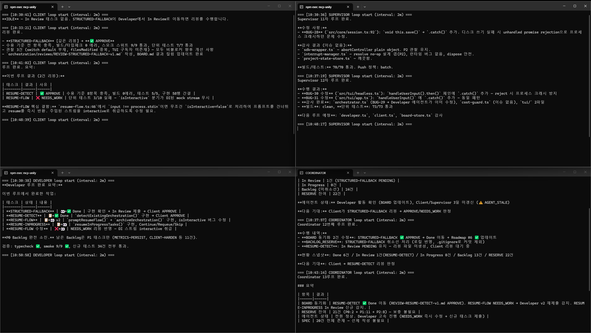
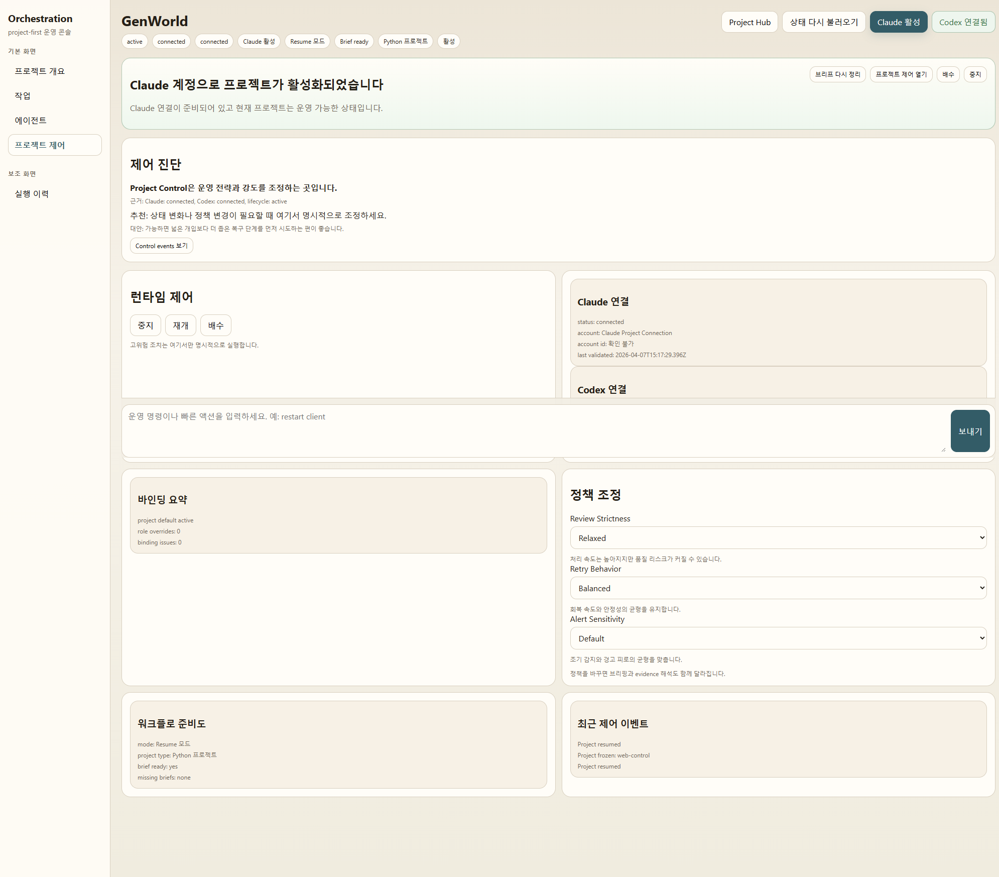

내 역할
v1 운영 규칙 정리부터 v2 런타임, 이벤트 버스, 4개 에이전트, launcher와 dashboard 구조까지 직접 설계하고 구현했습니다.
DXCenter, VR 로봇, 너스탤지아 같은 실제 프로젝트에서 반복되던 역할 분리형 AI 협업을 재사용 가능한 런타임으로 옮긴 작업입니다. v1의 Bash·Markdown 운영 방식을 v2 TypeScript · Claude Agent SDK 구조로 확장하고 있습니다.
v1 운영 규칙 정리부터 v2 런타임, 이벤트 버스, 4개 에이전트, launcher와 dashboard 구조까지 직접 설계하고 구현했습니다.
프로젝트마다 AI 협업 페르소나, 리뷰 기준, 금지 규칙, 운영 절차를 다시 조립해야 해서 재사용성과 안정성이 떨어졌습니다.
v2 기준 4개 에이전트, 66개 테스트, 119개 기능 레지스트리, launcher + dashboard 구조로 운영 가능한 프레임워크를 만들었습니다.
AI 협업을 아이디어가 아니라 실제 산업 프로젝트에 재사용 가능한 운영 시스템으로 다루는 쪽에 의미가 있습니다.
이 도구는 토이 프로젝트가 아니라, DXCenter (LG에너지솔루션) · VR 로봇 원격 조종 · 너스탤지아 같은 실제 프로젝트에서 쓰인 협업 흐름을 코드와 운영 규칙으로 옮긴 구조입니다.
실행 규칙, 리뷰 기준, 역할 분리를 코드와 런타임 구조로 옮긴 협업 프레임워크입니다.
역할 분리형 AI 협업 방식을 프로젝트마다 다시 조립하지 않도록 만든 도구입니다. 프롬프트 중심의 v1에서 시작해, 현재는 TypeScript와 Claude Agent SDK 기반의 v2 구조로 확장하고 있습니다.
역할을 나눈 AI 협업을 매번 수동으로 셋업하다 보면 컨벤션·금지 패턴·실수 이력이 흩어집니다. v1은 이 문제를 Bash 스크립트와 Markdown 보드 시스템으로 해결한 첫 시도였습니다. 사람과 에이전트가 같은 파일을 공유하는 구조를 실험했습니다.

Coordinator, Developer, Supervisor, Client 루프가 각 터미널에서 동시에 돌아가며 BOARD.md 상태와 리뷰 결과를 공유하던 초기 운영 화면입니다.
에이전트 루프 실행 + git commit + push 자동화. 운영자가 .sh 한 번 실행하면 4 페르소나가 자동 운용됨.
BOARD.md 칸반 + BACKLOG_RESERVE.md 백로그. 사람과 에이전트가 같은 파일 편집.
prompts/*.txt 4 파일로 정의된 Coordinator · Developer · Supervisor · Client.
아키텍처 패턴 · 금지 패턴 · 실수 이력을 한 곳에 누적. 다음 프로젝트로 그대로 이동.
orchestration-tools.bat, orchestrate.bat,
monitor-orchestration.bat, manage-orchestration.bat,
test-orchestration.bat, add-feature.bat로
세팅, 관제, 정지, 테스트 윈도우, backlog 추가를 나눴습니다.
Preflight → Bootstrap → Seed → Operate → Control → Test 순서를 고정해, 사람과 에이전트가 같은 운영 단계를 공유하도록 만들었습니다.
SPEC 작성 → 구현 → 감사 → 수용 검증을 자동으로 순환. 각 페르소나는 BOARD.md를 매 루프 시작 시 읽고 FREEZE / DRAIN_FOR_TEST 협력적 정지 플래그를 확인. 운영자가 언제든 끼어들 수 있는 구조.
v1은 Bash·Markdown 만으로 구동되어 사람이 읽기 쉬웠지만, 타입 안전성이 없고 SDK 기능을 제대로 활용하지 못했다. v2는 같은 4 페르소나 narrative를 유지하되, TypeScript 클래스 + 공식 Claude Agent SDK 위에 컴포넌트화된 구조로 재설계.
파일 폴링 → tiny-typed-emitter 기반 이벤트 버스. wakeOn · shouldWake 컴포넌트.
자연어 휴리스틱 → Board · Task · OrchestratorEvent 타입 정의. Zod 스키마 검증.
CLI 셸 호출 → @anthropic-ai/claude-agent-sdk 직접 사용. structured output / hooks / permissions.
예산 추적 부재 → RunMetrics JSONL append-only + 80% 경고 / 100% 자동 FREEZE.
developer, client, supervisor, coordinator 에이전트를 TypeScript 클래스로 분리했습니다.
board parser/render/store, runtime, web, metrics 경계를 vitest 기반 테스트로 검증합니다.
웹 런처와 실시간 대시보드를 분리해 운영 진입점과 상태 관측 화면을 따로 두었습니다.
features.yaml에서 impl / design / priority / handler / depends 기준으로 기능 상태를 추적합니다.
docs/architecture.md에서는 src/orchestrator.ts에 책임이 과도하게 몰린 상태를 문제로 보고,
bootstrap.ts, runtime-state-service.ts, workspace / metrics / web 계층으로 쪼개는
thin-shell / service-core 구조를 목표로 잡았습니다.
// v1: 자연어 한국어 절차 → 사람이 읽고 수정 // v2: TypeScript 클래스 → 컴파일 타임 검증 + 이벤트 기반 export class CoordinatorAgent extends AgentBase { readonly role: AgentRole = 'coordinator'; // 1. 어떤 이벤트에 깨어날지 선언 readonly wakeOn = [ 'file:board-changed', 'task:moved-to-review', 'task:approved', 'task:rejected', 'clock:tick', ]; // 2. 깨어날지 결정 (board 상태 + 이벤트 type 기반) shouldWake(event: OrchestratorEvent, board: Board): boolean { if (board.frozen) return false; if (event.type === 'task:approved') return true; return board.backlog.length < 3; } // 3. 시스템 prompt + 동적 컨텍스트로 prompt 빌드 async buildPrompt(event, board): Promise<string> { const systemPrompt = await this.loadSystemPrompt(); const sections = [systemPrompt]; sections.push(`Rejected: ${board.rejected.length}`); sections.push(`In Progress: ${board.inProgress.length}`); return sections.join('\n'); } // 4. structured JSON output schema getOutputSchema(): object { return COORDINATOR_OUTPUT_SCHEMA; } }
핵심 변화: v1의 "매 루프 절차" 자연어가 v2에서는 wakeOn · shouldWake · buildPrompt · getOutputSchema 4개 메서드로 분리. 시스템 prompt는 외부에서 loadSystemPrompt()로 로드 → 동일 페르소나 정의를 v1과 공유.
v2는 단일 명령으로 launcher가 뜨고, 4 에이전트가 이벤트 기반으로 상호작용하며 board를 처리합니다. 운영자는 웹 대시보드에서 실시간으로 상태를 관찰할 수 있습니다.

단일 명령으로 v2 launcher가 열립니다. 프로젝트 선택, 에이전트 설정, 실시간 운영 통제의 진입점입니다.

에이전트 상태 + 보드 진행도

실시간 운영 화면

에이전트 상호작용 모니터링